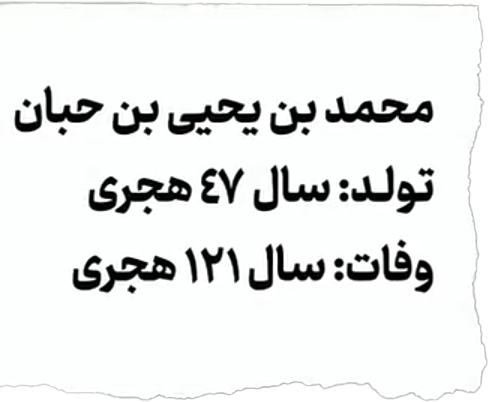

در سال چهارم هجری پیامبر اسلام به زید بن حارثه که غلام آزاد شده و پسر خوانده اش بود پیشنهاد داد با زینب بنت جحش که دختر عمه پیامبر بود ازدواج کنه و خود پیامبر هم شخصا برای خواستگاری زینب پیش خانواده اش میره در ابتدا زینب و خانواده اش مخالفت کردند چون از قریش بودن و زید را که برده آزاد شده بود را از نظر نسب و موقعیت اجتماعی پایین تر می دونستن اما چون پیامبر واسطه شده بود در نهایت با ازدواج موافقت کردن
بعد از حدود یک سال به خاطر اختلافات شدید در زندگی مشترک زید بارها پیش پیامبر اومد و خواست همسرش را طلاق بده پیامبر مدام به زید میگفت : همسرت را نگهدار و از خدا بترس
اما پیامبر هر چقدر تلاش کرد نتونست زید را از این کار منصرف کنه و نهایتا زید زینب رو طلاق داد
بعد از جدا شدن زید از زینب و سپری شدن ایام عده خدا به پیامبر دستور داد که باید با زینب ازدواج کنه
علت دستور خدا به این ازدواج این بود که باید یکی دیگه از آداب و رسوم جاهلیت از بین میرفت
در اون زمان یکی از رسم های جاهلی این بود که ازدواج با زن پسر خوانده ناپسند وممنوع بود و زن پسرخوانده را مثل همسر پسر واقعی می دونستن
اما تمام شبهات ویدیو برمیگرده به یک داستان ساختگی که میگه
پیامبر خونه زید میره و زینب را با لباس خواب می بینه و زیر لب زمزمه میکنه سبحان مصرف القوب یعنی پاک است خدای گرداننده دل ها حالا کی این داستان ساختگی را روایت کرده ؟
شخصی به نام محمد بن یحیی که متولد سال 47 هجریه یعنی حدودا 34 سال بعد از وفات پیامبر به دنیا اومده و اصلا توی اون زمان وجود نداشته
بنابراین این داستان فاقد اعتباره و این ازدواج در جهت اصلاح یک فرهنگ غلط اجتماعی بوده نه یک عمل هوس رانانه